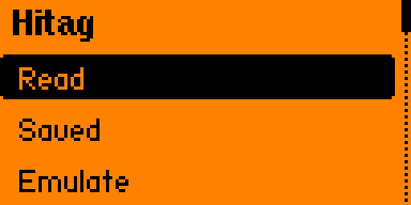
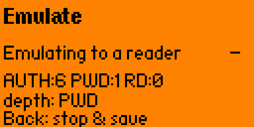
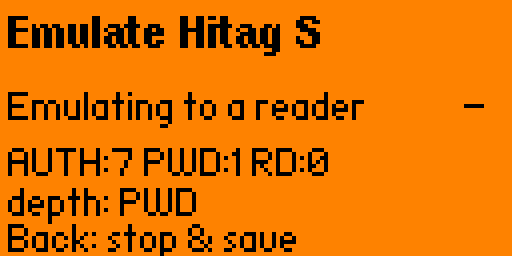
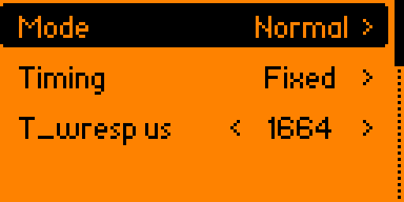
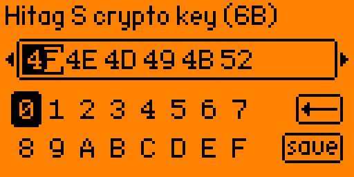
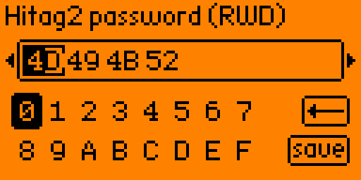

A reverse-engineering project that reads, sniffs and — for the first time on a Flipper — emulates Hitag2 and Hitag S (125 kHz LF) transponders, including password and crypto modes. A proof of concept, not a polished product: it works, but it is fiddly, coupling-sensitive, and needs a patched firmware. For tags and readers you own.
No mainline Flipper firmware (official, Momentum, Unleashed, RogueMaster) supports Hitag2 read or emulate. The only public prior art is the unmerged Hitag1 / reader-talks-first (RTF) pull request flipperzero-firmware #2658. This project extends that base to Hitag2 (password + crypto), a full Hitag S implementation, and — most interestingly — tag emulation that drives the coil's load modulation to answer a real reader.
The reader strips a fixed-length start-of-frame, then reads the rest as data. Matching the preamble to that length and sending the raw 32 bits (dropping an earlier leadbit hack that lost bit 31, e.g. 0xAA → 0x2A) makes every page read back faithfully — the key that unlocked crypto reads too.
Emulation only works if the reply lands inside the strict Hitag2 window. An in-app autotune sweeps the reply delay and locks on the first timing that completes — repeatable across readers.
Every step was cross-checked with a Proxmark3 as the reference reader (lf hitag read --ht2), which reads the emulated tag back exactly — the ground truth behind the claims here.
Hitag2 is 125 kHz — nothing to do with the Flipper's 13.56 MHz NFC chip. It all runs on the STM32WB: a timer makes the carrier, the analog comparator demodulates, a pull‑out pin does the load modulation.
Read a Hitag2 password-mode tag (UID, password, 8 pages), or passively sniff a real reader: recover its password, collect Hitag2 crypto nonces for a PC cracker, or capture a Hitag S 82xx password. Save/load .hitag dumps.
Play a dump back to a reader with a live AUTH / PWD / RD readout. Password mode (Normal / Tolerant, Auto-timing) and a separate crypto mode — full nRaR mutual auth with the 48-bit cipher, then encrypted reads.
A complete Hitag S tag: UID_REQ → SELECT → READ / WRITE across all four reader modes, plus crypto/challenge, 8268/8310 password, and enforced config lock bits.
Detect auto-rotates Hitag2 / Hitag1 / Hitag S. Edit the Hitag2 password, the Hitag S crypto key and the 82xx password from the menu. Diagnostic traces are off by default, behind a debug toggle.
A Read Hitag1 mode is carried over from the RTF base — but no Hitag1 tag was on hand to test it, so treat V1 as untested (see limitations).






.fap.Two parts. Hitag2 LF emulation needs a small firmware HAL that the stock SDK lacks, so unlike a normal FAP you must also flash a patched firmware. The .fap alone will not run.
./fbt flash_usb). The patch is additive (an RTF HAL) and self-contained..fap from the latest release..fap into SD Card / apps / RFID (or install with qFlipper).AUTH counter and keep repositioning until it climbs.This project builds on prior open Flipper LF work — with thanks to:
Independent, unofficial research project, provided "as is". Use it only on transponders and readers you own or are explicitly authorized to test. Cloning or emulating access credentials you do not own may be illegal in your jurisdiction. The default password shown is the public, documented NXP factory-default value — not a secret. No manufacturer firmware, artwork or logo is included.